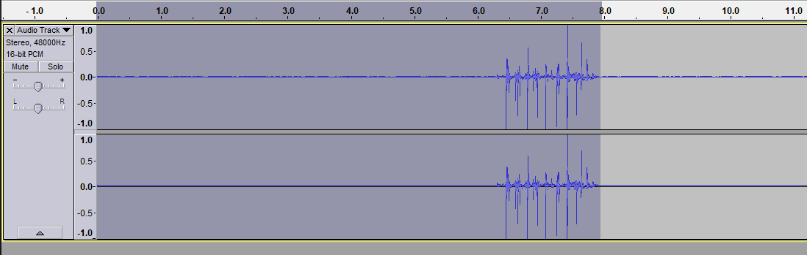

Vinyl Rip Guide
Vinyl Rip Guide
Software Requirements: Audacity, FLAC Frontend, Foobar2000
- Open Audacity
- Make sure the Recording Volume is set to around 0.80

- Hit the Record button
- Drop the needle on Side 1
- Listen to Side 1
- Once Side 1 is finished, hit the Stop button
- Open a new file in Audacity (File -> New)
- Hit the Record button
- Drop the needle on Side 2
- Listen to Side 2
- Once Side 2 is finished, hit the Stop button
- Head back to your Side 1 recording
- Zoom in on the track so you can find right where the first track starts to play
- Add new "Labels" at the start of each track with the track number (two digit format) and the name of the track. Click on the track right before the song starts, and then hit "Ctrl+B" to create a new label there
- For example, if it were Dark Side of the Moon, the labels would read "01 Speak To Me" "02 Breathe" "03 On The Run" and so on
- Do this for every track on Side 1
- Once all track labels have been added, cut out the beginning and ending of the full recording, where the needle was dropped and where it hit the end of the record. Simply highlight those areas on the track and hit "Ctrl+X" to cut them out


- Now, highlight the whole Side 1 track and go to "Effect -> Normalize". Make sure only the top box is checked in the box that shows up, then hit "OK"
- Now, if there was a lot of clicks/pops/etc, then with the Side 1 track still fully highlighted, go into "Effect -> Click Removal" and hit "OK"
- Next, with the Side 1 track still fully highlighted, go to "Effect -> Amplify" and change the "Amplification (dB) value to -0.1 (negative 0.1). This will increase the volume on the track since we record at a lower volume to avoid clipping
- Now repeat steps 13-19 on your recording of Side 2
- Next, make a new folder in your Vinyl Rips folder that has the following naming convention:
- Artist - Album (Original Release Year) [Vinyl-FLAC] {Re-release Year - Country of Origin - Record Label - Catalog Number}
- So, using Dark Side of the Moon as our example again, it would look like: Pink Floyd – Dark Side of the Moon (1973) [Vinyl-FLAC] {Harvest – SMAS-11163}
- Or, if it was a remastered version, it might look like this instead: Pink Floyd – Dark Side of the Moon (1973) [Vinyl-FLAC] {2016 Remastered – US – Pink Floyd Records – PFRLP8}
- Now, back in Audacity, go back to your Side 1 track, and go to "File -> Export Multiple"
- Set the folder to the new one you just made by hitting the Choose button, and then make sure the other settings look like this:

- It will then show up with other windows that try to get you to add tags for each track. Just click OK on each of those windows without entering anything. We'll add tags later in the process
- Now repeat steps 22-24 on Side 2
- Next, head to the folder you exported the tracks to, and you should see each track sitting in there with the filenames being the same as our Labels from earlier
- Go ahead and open up the FLAC Frontend program now
- Drag and drop all of the files in your folder into FLAC Frontend
- Next, change the "Level" setting to 8, and check the box that says "Delete input files"
- Here is an example image to make sure the settings are correct:

- Now hit the Encode button and you'll see a command-line window pop up. Just let it do it's thing, and once it's done, you can hit any key to continue, and the window will close. You should then see that all of the .wav files we exported have now been converted to .flac files instead
- Next, it's time to add tags, and we'll use Foobar2000 to do that easily. Open up Foobar2000, and in a new playlist, drag and drop all those new FLAC files
- Highlight all of the tracks, and then right click and select "Properties"
- Fill in all of the relevant fields with the appropriate info, skipping over the track titles and numbers for now. So, with Dark Side as our example again, it should look something like:

- Now, right click on the space where it says "Track Title" in the "Value" column, and select "Edit"
- A new window will pop up with each track and a space to enter the track titles
- Now just do the same thing, but with the "Track Number" field, and use the same two digit format to fill in the track numbers
- Once you are all done, hit "Apply" and "OK" on the Properties window, and all of the tracks should now be correctly tagged
- Next up, search online for an image of the album cover. If there is no image available online, just take one with your phone and crop it down
- Place the cover image in the album folder and rename the image file to just "cover"
- Now, go and grab your "lineage.txt" file, which should include all of your turntable and ripping hardware/software info, and paste a copy of it into the album's folder
- That's all! The ripping process is now complete
Published on: June 01, 2024